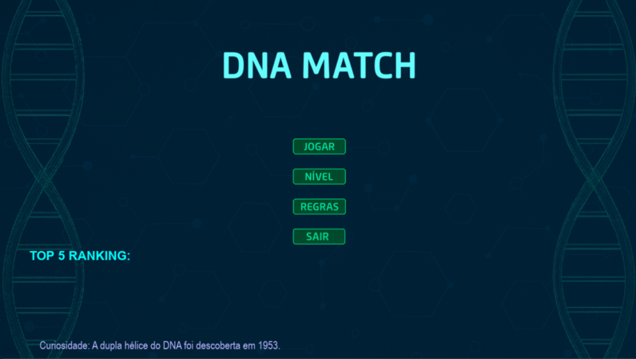
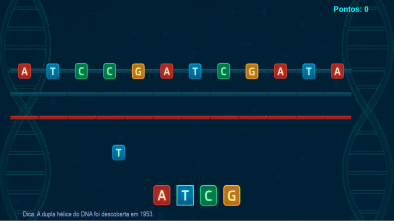

DNA Match é um jogo puzzle educativo que combina agilidade e raciocínio lógico com conhecimentos de biologia molecular. O jogador deve alinhar corretamente as bases nitrogenadas de fitas de DNA e RNA, respeitando as regras de pareamento. De forma visual, divertida e interativa, o jogo introduz conceitos fundamentais como códons de início/parada e estrutura de nucleotídeos.
Seu diferencial está em unir jogabilidade com conteúdo escolar de forma acessível e estética futurista, inspirada no universo sci-fi.
O objetivo principal é completar corretamente as fitas genéticas que se movem pela tela, escolhendo as bases complementares ideais:
.zippip install pplaypython main_dna.pyInspirado visualmente no filme Tron: O Legado, o jogo utiliza uma paleta neon sobre fundo escuro, oferecendo um visual limpo, sci-fi e educativo. As bases nitrogenadas são representadas por blocos coloridos vibrantes.
Abaixo estão algumas capturas de tela que ilustram a estética, jogabilidade e interface do DNA Match:
 Música em destaque:
Aos meus (muitos) irmãos, que esse jogo possa facilitar o entendimento de genética básica de forma que consigam experimentar pelo menos um pouco da paixão que tenho pelo assunto. xoxo!